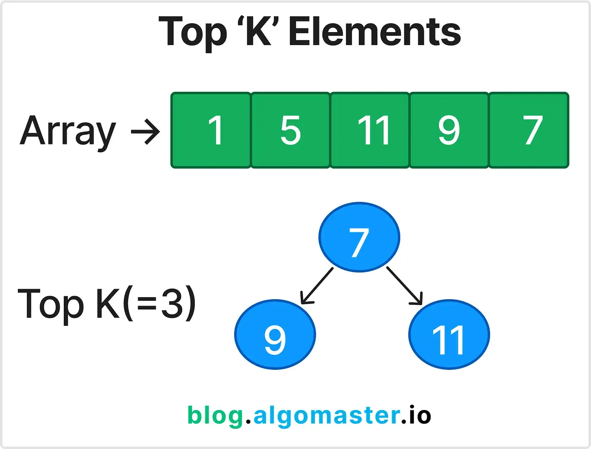

← К содержанию
7. Top K Elements
Top K Elements — паттерн для поиска k наибольших или наименьших элементов в массиве или потоке данных. Обычно реализуется с помощью кучи (heap).
Когда использовать?
Когда нужно быстро находить k максимальных/минимальных элементов, медиану, k ближайших точек и т.д., особенно если данные поступают потоком.
Объяснение

- Используется min-heap (для поиска k наибольших) или max-heap (для поиска k наименьших).
- В кучу помещаются элементы, поддерживается размер k.
- Если добавляется новый элемент и размер превышает k, удаляется минимальный (или максимальный) элемент.
- В результате в куче остаются нужные k элементов.
- Паттерн часто используется для задач на топ-k частот, k ближайших точек, медиану в потоке и др.
- В Swift можно использовать массив и сортировку, но для больших данных heap эффективнее (O(n log k)).
Пример задачи
Вход: nums = [3,2,1,5,6,4], k = 2
Выход: 5 (второй по величине элемент)
Swift пример
func findKthLargest(_ nums: [Int], _ k: Int) -> Int {
let sorted = nums.sorted(by: >)
return sorted[k-1]
}
let nums = [3,2,1,5,6,4]
let result = findKthLargest(nums, 2) // 5
LeetCode задачи
Дополнительный пример
Вход: nums = [1,1,1,2,2,3], k = 2
Задача: Найти два самых частых элемента.
Выход: [1,2]
Советы и типичные ошибки
- Для больших данных используйте heap, а не сортировку.
- Проверьте, что k не превышает размер массива.
- В задачах с частотами используйте словарь для подсчёта.
- Внимательно относитесь к порядку элементов при одинаковых значениях.
Связанные паттерны
Дополнительные ресурсы